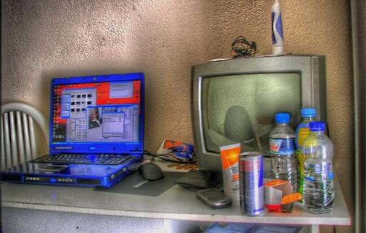
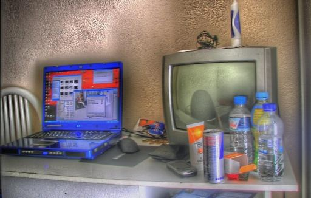
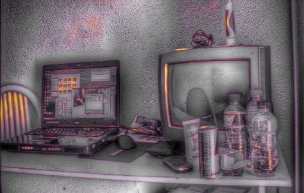
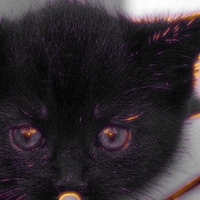
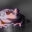

COCO real · caption pair 0
GT real · P(AIGC) = 0.982151 · false positive @ 0.5



每张图使用同一 checkpoint、4×4 patch 遮挡和完整 16 条赛题变换。贡献热图为单图 max-abs 归一化，红色提高、蓝色降低 AIGC confidence；纹理图是高频残差输入信号，不是伪造区域真值。页面中的 correct/false positive 仅按名义阈值 0.5 标注；该 sigmoid 未做概率校准，也没有套用包内另存的分类阈值。






